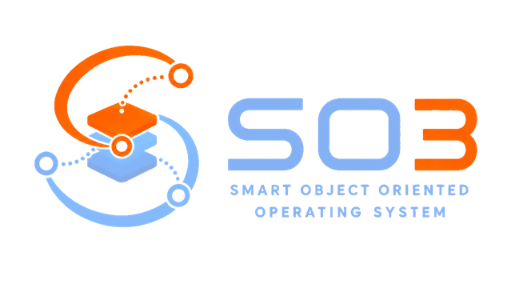
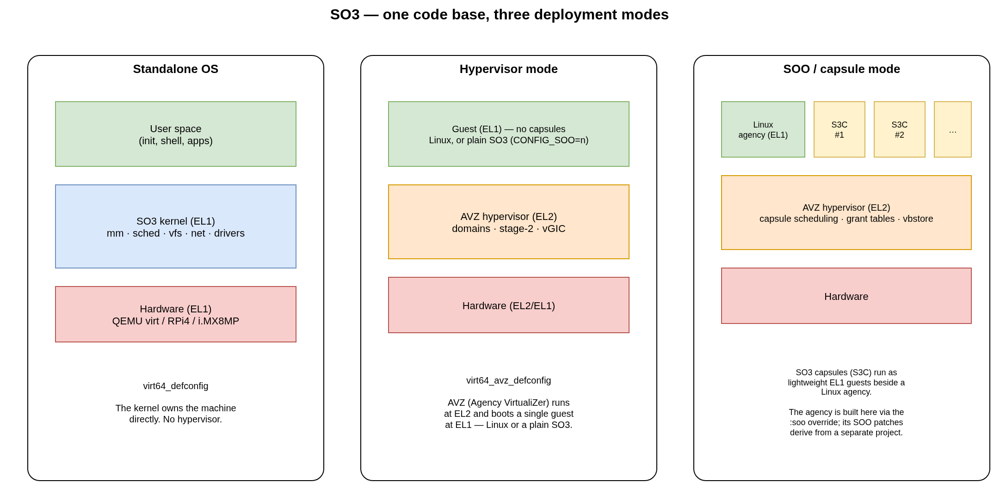

{kind=link}

Smart Object Oriented (SO3) Operating System
SO3 is a compact, lightweight, full-featured and extensible operating system, particularly well suited to embedded systems. From a single code base it can be built in three ways:
as a standalone OS running directly on the hardware (EL1 on ARM64);
as the AVZ hypervisor (Agency VirtualiZer) running at EL2, hosting the agency guest at EL1 — and, with the SOO framework, up to five capsules beside it;
as an SO3 capsule (S3C) — a lightweight guest on top of AVZ, as part of the SOO framework.
{kind=link}

Fig. 1 The same SO3 code base deployed in its three modes.
The AVZ guest is the agency, which owns the hardware. The agency is normally
Linux (and, with the SOO framework, runs SO3 capsules beside it); the SO3
tree can also be built as a plain guest (CONFIG_SOO=n) to exercise the
hypervisor on its own.
This documentation reflects the current state of the code base: ARM 32/64-bit, multicore, the AVZ hypervisor and SO3 capsules are all supported.
Where to start
- Introduction
Philosophy, history and the polymorphic nature of SO3.
- Architecture · Kernel internals
The user/kernel split, the boot flow, and how the kernel subsystems work.
- AVZ hypervisor · SO3 capsules
Virtualization at EL2 and the SOO capsule framework.
- Build system · User guide
How the tree is built, configured and packaged, and a step-by-step setup.
- User space · Debugging
The MUSL-based user land, and how to debug SO3 under QEMU/GDB or JTAG.
Acknowledgements
We would like to thank our sponsors for their generous support in funding the development of the SO3 ecosystem, especially HEIG-VD and the Hasler Foundation.
We are also grateful to all the contributors — developers, students, researchers and community members alike — whose code, ideas and feedback have shaped SO3.